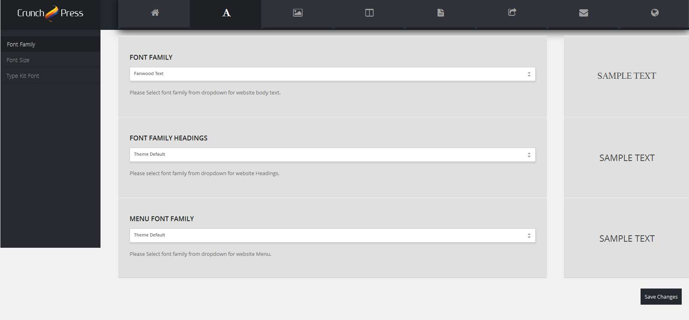
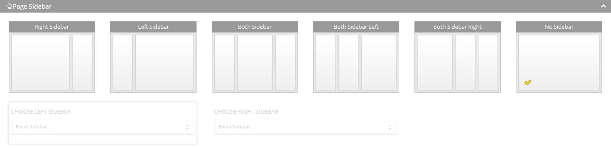
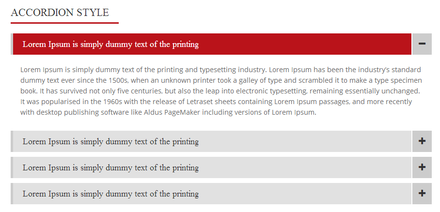

Introduction
Politicize WordPress Theme has a full width slider layout and a flat design concept. We highly recommend the Politicize WordPress theme because we think it is one of the best Political WordPress themes available today. It is packed with all the great features. It is easy to use. It is very flexible and customizable.It is beautiful, mobile-friendly responsive design, unlimited sidebars for widgets, photos and videos gallery, calendar, staff, news and a contact page. The Timeline and Portfolio section has the ability for projects that can be sort by year. You can customize your fonts, and colour. All this can be done quickly from the WordPress dashboard.
Politicize Theme Key Features
- Full Width Layout
- Six Different Header Styles
- Two Different Footer Styles
- Social Network Sharing Options
- Events Handler
- WPML Supported
- TimeLine For Projects
- Portfolio Management
- Woo-commerce For Online Shop
- 4 Different Product List Styles
- CrowdFunding Plugin Integration
- Font Awesome Icons Support 4.1.0
- Bootstrap Responsive design
- One Click Dummy Content Importer
- Unlimited Color Schemes (Theme Option Panel)
- 2 Built in Styled Sliders, Layer Slider and Bx Slider .
- Easy to use Page Builder (Maximum user friendly approach)
- Manage Unlimited Sidebar - You Can Put Separate Sidebar with Each Page.
Getting Started!!
Important Note! Wordpress has default functionality for cropping images and add images on pages in required sizes.
Image dimension that we recommend you to upload (Width X Height) 2200x900
Only for team members (Width X Height) 614x614
After Downloading Package from Themeforest.net you'll have all files inside the theme package. Do not upload the entire package that you get from ThemeForest, upload only the ‘politicize.zip’ file. There are two ways to upload a theme;
Upload by FTP:
You can upload your theme by logging to your hosting service upload the theme files that are located in themes folder. Once you've uploaded the theme you can open WordPress Dashboard > Appearance > Themes page and activate the theme from list.
Install Theme by Wordpress Dashboard Panel:
Theme Installation by Wordpress Admin Panel can be simply install by 3 steps only. Please Follow The Guide line below.
- Open WordPress Admin Dashboard > Appearance > Themes
- Click on Add New Button,(zip the theme files) select the zip file and upload it by using upload button
- Click on Activate. As you click on Activate button, it will take a while to load your theme settings.
- “Congratulations you have successfully activated the Politicize WordPress Theme”
Hint: If you need help installing WordPress check this out. Installing WordPress http://codex.wordpress.org/installing_wordpress
Install Plugins: (Included in Theme Package)
After installation and activation of theme, there would be Green bordered notice on top for plugin installation, click on Begin installing plugins and it will take you to another page where you can see list of plugins need to be installed.
One Click Dummy Data Import (Same Like Demo)
Required Plugin - Wordpress Importer, Crunchpress Framework, Crunchpress Shortcodes
Theme has given one click dummy content importer functionality with it, with in no time your theme will be setup same like demo, without any configuration been done manually.
One Click Dummy Import functionality given in CP Theme Panel > Import Dummy Content
This is great functionality that gives you liberty to setup your theme without doing anything manually. One Click and your website will be setup same like demo (With Dummy Images).
General Settings (Dashboard > CP Theme Panel > General Settings)
Now you are at Theme General settings.
Logo Settings
You can manage your website logo in this section. (Dashboard > CP Theme Panel > General Settings > logo settings )
- Logo Upload: You can upload your Logo by clicking on Upload Button.
- Manage Width: You can manage your width of your logo by scrolling the slide left to right, you can also use Keyboard Arrow keys to control width.
- Manage Height: You can manage your Height of your logo by scrolling the slide left to right, you can also use Keyboard Arrow keys to control Height.
Style and Color Scheme
You can manage your website color scheme, background pattern, Also you can upload your own pattern, with just one click change your entire website color scheme in this section. (Dashboard > CP Theme Panel > General Settings > Style and Color Scheme )
- Website Layout: Already set to Full Width Layout for your convenience.
- Color Scheme: You can change your website color scheme choosing any color you want from color palette.
- Select Background Type: You can manage your website Background Type from dropdown Background Pattern or Background Color.
- Background Pattern: You can manage your Background pattern from built in theme patterns.
- Background Pattern Upload: You can manage your Background pattern by uploading your own pattern.
- Background Image Upload: You can upload your own Background Image.
- Background Image Position: You can manage your Background Position from here (Top,Bottom,Left,Right,Center).
- Background Image Type: You can manage repeat of your Background from here. (No-Repeat, Repeat-Horizontal, Repeat-Vertical,Repeat)
- Background Image Attachment: You can manage your Background Attachment from here (Fixed, Scroll).
Header Settings
You can select any header style from the given five different header styles. You can manage your website Headers, contact menu and Social Icons at the top of the page, also can manage your website header scripts, css and Google analytic code in this section. (Dashboard > CP Theme Panel > General Settings > Header Settings )
- Select Header Layout: You can select your site header style from the dropdown.
- Apply Header On All Pages: You can turn On/Off your website header style to appear on all pages.
- Header Code: You can Manage your website Header Code.
- Google Webmaster Verify Code: You can paste your google, Bing, yahoo etc analytics code here to validate your site in webmaster.
- Contact Us: You can paste html for menu that will appear on top of the header.
- Top Social Icons: You can Manage Top Social Icons with in Top header from here.
Footer Settings
You can manage your website Footer Copy Right Text and Footer Social Icons in this section.

- Logo: You can Manage your Footer Logo from this section.
- Width: You can Manage your Footer Logo Width.
- Height: You can Manage your Footer Logo Height.
- Social Icons: You can Turn on\off Footer Social Icons.
- Footer CopyRight: You can Manage your website Copy Right Text.
- Footer Widget Layout: You can select footer layout style.
- Twitter: You can Turn on\off Twitter Slider Section above footer.
- Twitter ID: Twitter ID for displaying tweets in twitter slider.
- Consumer Key: Twitter Consumer Key.
- Consumer Secret: Twitter Consumer Secret Key.
- Access Token: Twitter Access Token.
- Access Token Secret Key: Access Token Secret Key.
Note:You can get all these twitter keys for your own profile from twitter.com
MISC Settings
You can manage your website RTL Layout and Breadcrumbs in this section.
- Breadcrumbs: You can Turn On/Off your website Breadcrumbs that will show on pages.
- RTL Layouts: You can turn On/Off RTL Layout of website.
Maintenance Mode Settings
You can manage your website Maintenance Mode Settings , Maintaince Title , Countdown Time and Email in this section.
- Maintenance Mode: You can turn On/Off Maintenance mode from here.
- Maintenance Title: You can add title on maintenance page.
- Countdown Time: You can add the countdown time on the maintenance page from here.
- Email:You can add email where you want to post subscriptions.
- Description: You can add description text for your website maintenance.
- Social Icons:You can turn On/Off Maintenance mode social icons that are showing at bottom of page.
User API Settings
You can manage your theme Envato API in this section.
- Username: You can Turn On updates for theme you purchased from themeforest.Net by giving your username here.
- API Key: You can Turn On updates for theme you purchased from themeforest.Net by giving your API Key here.
Typography
You can manage your theme font here, theme has given updated Google Fonts, Adobe Edge Fonts and Adobe Typekit Fonts here.

- Font Family: You can Select Google Font Family, Adobe Edge and Adobe Typekit for theme Body text here. (Also can see the view of your font next to dropdown)
- Font Family Headings: You can Select Google Font, Adobe Edge and Adobe Typekit for theme headings here. (Also can see the view of your font next to dropdown)
- Menu Font Family: You can Select Google Font, Adobe Edge and Adobe Typekit for theme menu here. (Also can see the view of your font next to dropdown)
Font Size
You can manage your theme Body font size and Headings Font Size here.
- Body Text Font Size: You can manage theme Body text size here.
- Heading 1 (H1) Size: You can manage theme Heading 1(H1) size here.
- Heading 2 (H2) Size: You can manage theme Heading 2(H2) size here.
- Heading 3 (H3) Size: You can manage theme Heading 3(H3) size here.
- Heading 4 (H4) Size: You can manage theme Heading 4(H4) size here.
- Heading 5 (H5) Size: You can manage theme Heading 5(H5) size here.
- Heading 6 (H6) Size: You can manage theme Heading 6(H6) size here.
Adobe Typekit Settings
You can manage Adobe Type Kit Font Settings here.
- Typekit Embed Code: Paste your Adobe type Kit Embed Code in this section.
- Font Name: Please paste your font name here.
Slider Configuration
Now you are at Slider Settings, Theme Contains Bx-Slider responsive.
- Slider Effect: Select animation type for BX slider from dropdown.
- Auto Play: Please select to turn on/off slider autoplay.
- Pause on Hover: You can manage slider on hover here.
- Animation Speed: You can manage slider animation speed here.
- Show bullets Navigation: You can turn on/off bullets navigation.
- Show arrow Navigation: You can turn on/off arrow navigations.
Sidebar Settings
New Sidebars can be added through this section, Sidebar will be available in the widgets panel where you can add widgets in it and use that sidebar with different pages as you like.
- Add Sidebar: Just click and add new sidebar, You can add widgets in newly created sidebar through widgets panel in appearance section of dashboard.
Default Pages Settings
Now you are at Default Pages Settings, Search, archives, category and custom post type tags and category sidebars and caption managed here.
- Sidebar:You can manage default page sidebar in this area.
- Right Sidebar:You can manage / Select Sidebar from dropdown to use in the default page.
- Left Sidebar:You can manage / Select Sidebar from dropdown to use in the default page.
- Both Sidebar:You can manage / Select Sidebar from dropdown to use in the default page.
- Default Excerpt:You can manage default pages excerpt text in this area.
Social Settings
Now you are at Social Settings, Social networking and social sharing info managed here.
- Facebook:You can manage facebook profile on your theme in this area.
- Twitter:You can manage twitter profile on your theme in this area.
- Google +:You can manage google + profile on your theme in this area.
- Linked In:You can manage linked in profile on your theme in this area.
- Youtube:You can manage youtube profile on your theme in this area.
- Flickr:You can manage flickr profile on your theme in this area.
- Vimeo:You can manage vimeo profile on your theme in this area.
- Pinterest:You can manage Pinterest profile on your theme in this area.
- Delicious:You can manage Delicious profile on your theme in this area.
- Skype:You can manage Skype profile on your theme in this area.
- Github:You can manage Github profile on your theme in this area.
- Instagram:You can manage Instagram profile on your theme in this area.
Social Sharing
You can social sharing here.
- Facebook:You can turn On/Off facebook sharing on your theme in this area.
- Twitter:You can turn On/Off twitter sharing on your theme in this area.
- Stumble Upon:You can turn On/Off Stumble Upon sharing on your theme in this area.
- Delicious:You can turn On/Off Delicious sharing on your theme in this area.
- Google +:You can turn On/Off Google + sharing on your theme in this area.
- Digg:You can turn On/Off Digg sharing on your theme in this area.
- Myspace:You can turn On/Off Myspace sharing on your theme in this area.
- Reddit:You can turn On/Off Reddit sharing on your theme in this area.
Newsletter Settings
Now you are at Newsletter, Google Feed Burner info managed here.
Google Feed Burner
You can manage your Google Feed here.
- Enter Your Feed Burner Id:You can manage Google Feed in this area.
CP Newsletter
You can manage your newsletter here.
- Download Newsletter:You can export newsletter file in this area.
One Click Installation
You can import dummy content including widgets and their settings along with theme option settings with just one click.
Dummy Installation
You can manage your Dummy Content Here its more like it Import the XML file for you and setup whole website in just one click.
- Click on Import Content Button:Dummy Content will start importing. It will take time to finish once it gives you success message all you need to refresh your home page and take a look at demo.
How to Setup Home Page (Manually)

Home Page can be easily managed by short-codes and page elements.
You can manage your Home Page settings under the visual editor.
- Add Sliders (BX-Slider) From Page Options.
- Add News Slider using Page Options.
- Need to add event calender Using Page Builder (Page Elements).
- Add gallery using Page Builder (Page Elements).
- Add testimonials, client slider.
How to Setup Home Page (Causes) [NEW]
Home Page can be easily managed by short-codes and page elements.
You can manage your Home Page settings under the visual editor.
- Select Header 6 and Add Bx Slider From Page Options.
- Add Crowd Slider Element.
- Add Column Element and Place heading.
- Place 3 columns of width 1/3 and add Services Shortcode.
- Add Crowd Funding Element to Display Added Projects.
- Add Portfolio Element to Display Added Portfolios.
- Add Full Width Column Element and add Project Facts Shortcode.
- Place Blog Slider Element.
- Place Gallery Element.
- Note: CrowdFunding Related Elements Will Be Displayed After Plugin Installation.
How to Setup Home Page (Government) [NEW]
Home Page can be easily managed by short-codes and page elements.
You can manage your Home Page settings under the visual editor.
- Select Header 6 and Add Bx Slider From Page Options.
- Add 4 Columns of width 1/4 and Place Services Shortcode.
- Add Portfolio Slider for displaying Added Portfolios.
- Place 3 columns of width 1/3 and add Services Shortcode.
- Place News Element of width 1/2.
- Add Events Element of width 1/2 to display published events.
- Add Full Width Column Element and add Project Facts Shortcode.
- Place Gallery Element.
How to Setup WooCommerce SHOP [NEW]
Note: After Installation of WooCommerce Plugin, Woo-Products Element Will Appear In Page Elements.
How to place and configure Woo-Products Element?
Woo-Products element is used to display the products that have been added inside the Dashboard > Products.
It will be only available if you have installed and activated Woo-Commerce Plugin. After Adding the Products, You can create a Page having all these products listed i.e. Shop Page, Products Page.
Step-1: Dashboard > Pages > Add New
Step-2: Add Title
Step-3: Click on Page Element Dropdown Panel
Step-4: Click on Woo-Products Elements
Step-5: Configure the Element by Clicking on pencil shaped icon on right corner.
Step-6 a- Add Header Title:
It will display as Element’s Heading.
Step-6 b- Choose Category:
Choose Category of the products you would like to fetch or display on the page.
Step 6 c- Length of Excerpt:
It will determine how many characters will be displayed as the Product Description.
Step 6 d- Select Layout:
There are 4 Options given for the Layout of the Products.
Simple Grid
Normal Grid
Modern Grid
Modern Grid Diagonal [Filterable Not Available]
Step 6 e- Filterable:
Layout 1, 2 & 3 do have filterable option. Filterable “Yes” will get all the products added in the Dashboard > Products. Filterable “NO” will enable two extra fields.
Step 6 f- Column of Grid:
3 Column grids will display four products in each row.
4 Column grids will display three products in each row.
Step 6 g- Enable Pagination:
Pagination will only appear when the number of posts is greater than the number of fetched item in one page you can also select WordPress default pagination that can be added from settings.
Step 6 h- Products Number Fetch:
You can add the number of products you want to show on the page.
Page Builder Elements
Under the visual editor you have all the available elements those you can Add in page by Click and Drop
You can manage Elements with just click and drop.
- Title:You can manage your page title from here, you can turn On/Off your title showing on page from below option 'CONTENT TITLE'.
- Manage Size:You can manage your item width with Plus and Minus, clicking on plus button size will be increased and on minus it will be decrease.
Lets Try One Example Adding "Content" In Page Using CP PageBuilder.
You can add column under the visual editor of the page > CP page builder > page elements options or by using the shortcodes add the column from the page elements. Click on the column button. You can also manage column width by size of it.
Click on edit [Pencil Shaped Icon], Use Text area for HTML and Short codes it will help you to manage the columns as well.
After giving all the details click on publish button.
If you want to delete any element just click on the cross button and click on confirm to remove the element.
Add services you want to display on the home page. Click on edit enter the Font awesome icon class, Add title and service description. And do not forget to use division start and division end. This division will help you to show the services in the center of the page in full width layout. (Note: it will only work in full width and will be disabled in container).
Division StartThis element will help you to add fluid width container over your element it’s more like division ( < div > ) start 100% of the page. Also it has options to manage background color or Add Image, add padding as well as manage image attachment.
Note: You have to add division start and end at same time in between you can place your content, if you don’t use division end container won’t get its closing tag and it will break the complete layout.Division End
This element is closing tag of division start, it will help you to wrap your content in full layout.
You can manage the Services by using the page elements. Add the Services Element from the page elements with a division start and then division end. Go to page elements. Start division add the Services from page elements then add division end. Manage the Services by clicking on edit button.
CP Short-Code Panel
CP short code panel helps you to insert the shortcodes easily with customize options such as colors, length etc. For Example: If you want to add columns by using CP shortcodes panel. Click on small CP button in the editing options under the main page Title.
CP shortcodes panel will appear. Select the columns to enter into the page.
After clicking the Columns button at shortcode panel will display you the options to choose the columns length from the drop down button (Full column , Half column , One third column , One Forth column , Two Third Column , Three forth column). After choosing the length write the content you want to display in the columns.
After clicking on the Insert shortcode button it will display like this.
For full layout you can use shortcode full-width from CP shortcode panel. By clicking the CP button you can select the full-wdith option.
Then you can choose the text align , background color , position , give padding to top , padding to bottom then the content etc. After inserting the shortcode will appear like this.
Sidebar Management
You can manage your page sidebars.

How to Manage Page Sidebar Using CrunchPress PageBuilder?
- Right Sidebar:You can click on right sidebar and dropdown will be appear you need to select sidebar from dropdown for page.
- Left Sidebar:You can click on left sidebar and dropdown will be appear you need to select sidebar from dropdown for page.
- Both Sidebar:You can click on both sidebar and two dropdowns will appear you need to select sidebar from dropdowns for page.
- Both Right Sidebar:You can click on both right sidebar and two dropdowns will appear you need to select sidebar from dropdowns for page.
- Both Left Sidebar:You can click on both left sidebar and two dropdowns will appear you need to select sidebar from dropdowns for page.
- No Sidebar:You can click on no sidebar, page will have no sidebar.
Once you have select any sidebar for page it will be shown on page make sure you have placed widgets in sidebar area
Hint: Appearence -> Widgets.
Using Content Element & Shortcodes
Crunchpress Presents List of easy Shortcodes that are available in theme. These shortcodes are so easy and simple to use just in few steps. You can get these shortcodes by clicking on the CP button.
When you click on the CP button. A pop-up box will appear that contains all the shortcodes with font awesome icons with the user-friendly interface.
Add Accordion using shortcode
Lets add Accordion as a example using CP shortcode panel. Click on cp button. Select the accordion. Wait for the next pop-up window appears.

Next pop-up window provides you the options to enter the Item title and Item Content If you want to add another accordion then under the item content just click on add another accordian tab. This makes your work so easy as you want.
After entering the fields click on INSERT SHORTCODE Then on the page your shortcode will be given like this.
Accordion Shortcode
[accordion] [acc_item title="Item 1"]For example item 1[/acc_item] [acc_item title="Item 2"]For example item 2[/acc_item] [/accordion]
How to display Shortcode into your page
After you got the shortcode. Go to the CP page builder under it click on the Page Elements And click on the button content. Manage its size by plus / minus button as you want.
Edit the column and make the content title and description to YES and click on done
When you click on publish button and view the page. Shortcode will help you to display the accordions like this.

CrunchPress Plugins List
Theme has given 7 plugins included.
Credits
All fonts, jquery scripts and images used in this templates are free to use and comes with GPL/MIT license.
JS and CSS files included in this theme.
| jquery.prettyphoto.js | Click here for source |
| pretty_script.js | Click here for source |
| jquery_countdown.js | Click here for source |
| fullcalendar.js | Click here for source |
| bootstrap.js | Click here for source |
| jquery.validate.js | Click here for source |
| bxslider.min.js | Click here for source |
| jquery-filterable.js | Click here for source |
| jPlayer.js | Click here for source |
| Animate.css | Click here for source |
Font Used
- Roboto Slab
- Open Sans
Images Used
All images on demo are stock images purchased from Shutterstock.com
Version History
= v1.0 = = * Initial Release
John Ailya
On behalf of CrunchPress.com Team